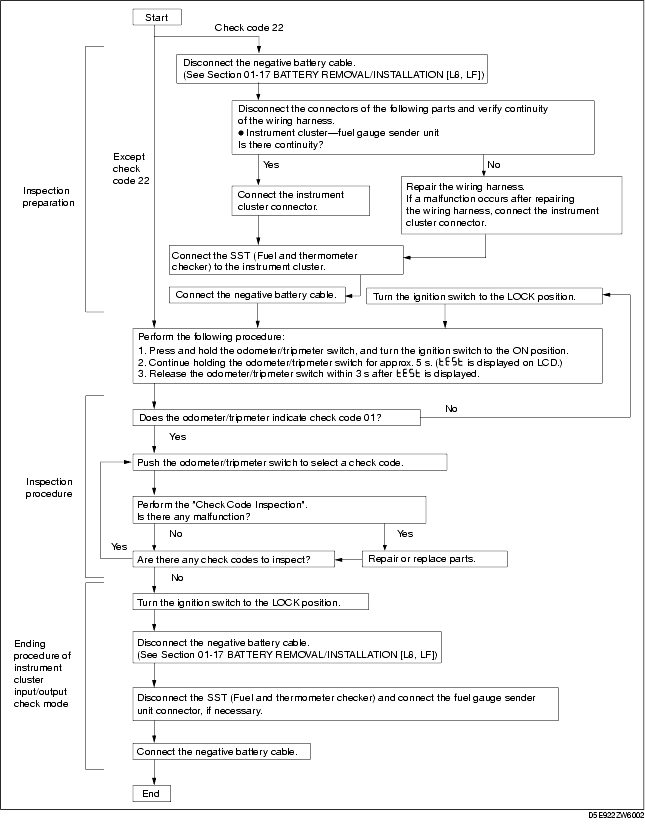

Workshop Manual ➭ BODY & ACCESSORIES ➭ INSTRUMENTATION/DRIVER INFO. ➭ INSTRUMENT CLUSTER INPUT/OUTPUT CHECK MODE
INSTRUMENT CLUSTER INPUT/OUTPUT CHECK MODE
id092200801700
{: #wp1059778}
*Note*{: #wp1069338}
• In this mode, it is possible to verify the items in the following chart.
Check Code Table
|
Check item {: #wp1059893} |
Related items {: #wp1059895} |
|
|---|---|---|
|
01 {: #wp1059809} |
Buckle switch (driver-side) {: #wp1059811} |
Seat belt warning alarm {: #wp1059867} |
|
04 {: #wp1059914} |
Door switch {: #wp1059917} |
• Lights-on reminder warning alarm {: #wp1059920} • Key reminder warning alarm {: #wp1060001} |
|
08 {: #wp1059924} |
TNS relay {: #wp1059927} |
• Lights-on reminder warning alarm {: #wp1059930} • Each illumination light {: #wp1060035} |
|
12 {: #wp1059934} |
Speedometer {: #wp1059937} |
Speedometer {: #wp1059940} |
|
13 {: #wp1060058} |
Tachometer {: #wp1060061} |
Tachometer {: #wp1060064} |
|
14 {: #wp1060083} |
Buzzer {: #wp1060086} |
Buzzer {: #wp1060089} |
|
16 {: #wp1060108} |
Fuel-level warning light {: #wp1060111} |
Fuel-level warning light {: #wp1060114} |
|
18 {: #wp1060135} |
Ignition key illumination {: #wp1060138} |
Ignition key illumination {: #wp1060141} |
|
22 {: #wp1060160} |
Fuel gauge sender unit {: #wp1060163} |
Fuel gauge {: #wp1060166} |
|
23 {: #wp1060185} |
Fuel gauge {: #wp1060188} |
Fuel gauge {: #wp1060191} |
|
25 {: #wp1060210} |
Water temperature gauge {: #wp1060213} |
Water temperature gauge {: #wp1060216} |
|
26 {: #wp1060235} |
• Odometer/tripmeter (LCD) {: #wp1060238} • Warning and indicator light {: #wp1060267} |
• Odometer/tripmeter (LCD) {: #wp1060241} • Warning and indicator light {: #wp1060292} |
|
28 {: #wp1060300} |
Oil pressure gauge {: #wp1060303} |
Oil pressure gauge {: #wp1060306} |
|
31 {: #wp1060325} |
Key reminder switch {: #wp1060328} |
Key reminder warning alarm {: #wp1060331} |
|
57 {: #wp1060350} |
Panel light control {: #wp1060353} |
Illumination light bulb {: #wp1060356} |
|
58 {: #wp1060375} |
• Buckle switch (passenger-side) {: #wp1060378} • Occupancy sensor {: #wp1060406} |
Seat belt warning alarm {: #wp1060381} |
|
59 {: #wp1060419} |
• CAN system {: #wp1060422} • Fuel gauge sender unit {: #wp1060449} |
• CAN system {: #wp1060425} • Fuel system {: #wp1060472} |
*Note*{: #wp1060482}
• Check codes which are not listed may be indicated, but they cannot be inspected. {: #wp1069190}• The check codes are displayed in numerical order. (While performing the inspection, if you want to inspect a check code with a number smaller than the code number you are currently inspecting, terminate the check mode then repeat the inspection from the beginning.) {: #wp1060500}• If a speed signal is input to the instrument cluster (the wheels are rotated), the input/output check mode will be cancelled. {: #wp1060510}• The check codes can be fast-forwarded by pushing and holding the odometer/tripmeter switch for 1 s or more.

Checking Order
*Note*{: #wp1060573}
• When inspecting more than two check codes, begin with the code with the highest ranking.
|
Ignition switch position {: #wp1060678} |
Check code {: #wp1060680} |
|
|---|---|---|
|
1 {: #wp1060594} |
ON {: #wp1060596} |
22 {: #wp1060652} |
|
2 {: #wp1060699} |
01, 04, 08, 12, 13, 14, 16, 18, 23, 25, 26, 28, 57, 58, 59 {: #wp1060705} |
|
|
3 {: #wp1060709} |
LOCK {: #wp1060712} |
31 {: #wp1060715} |
Check Code Inspection
Check code 01
|
Buckle switch (driver-side) {: #wp1060943} |
||||
|---|---|---|---|---|
|
STEP {: #wp1061065} |
INSPECTION CONDITION {: #wp1061068} |
DISPLAY {: #wp1061074} |
ACTION {: #wp1061077} |
|
|
1 {: #wp1060809} |
Unfasten driver-side seat belt. (Buckle switch ON) {: #wp1060811} |
{: #wp1060870} |
Go to the next step. {: #wp1060873} |
|
|
{: #wp1060983} |
Verify that the voltage of instrument cluster terminal 2A is 1.0 V or less. {: #wp1060986} • If the voltage is as specified, replace the instrument cluster. {: #wp1061170} • If the voltage is not as specified, inspect the following parts: {: #wp1061184} - Buckle switch (driver-side) {: #wp1061194}- Wiring harness (Buckle switch (driver-side)-instrument cluster) {: #wp1061209} |
|||
|
2 {: #wp1060990} |
Fasten driver-side seat belt. (Buckle switch OFF) {: #wp1060993} |
{: #wp1060999} |
Verify that the voltage of instrument cluster terminal 2A is B+. {: #wp1061002} • If the voltage is as specified, replace the instrument cluster. {: #wp1061264} • If the voltage is not as specified, inspect the following parts: {: #wp1061278} - Buckle switch (driver-side) {: #wp1061288}- Wiring harness (Buckle switch (driver-side)-instrument cluster) {: #wp1061303} |
|
|
{: #wp1061015} |
Input signal to the instrument cluster is normal. {: #wp1061018} |
|||
Check code 04
|
Door switch ON/OFF signal {: #wp1061494} |
||||
|---|---|---|---|---|
|
STEP {: #wp1061617} |
INSPECTION CONDITION {: #wp1061620} |
DISPLAY {: #wp1061626} |
ACTION {: #wp1061629} |
|
|
1 {: #wp1061360} |
Open the driver-side door. (The door switch is on.) {: #wp1061362} |
{: #wp1061421} |
Close the driver-side door, then go to the next step. {: #wp1061424} |
|
|
{: #wp1061534} |
Verify that the voltage of instrument cluster terminal 2E is 1.0 V or less. {: #wp1061537} • If the voltage is as specified, replace the instrument cluster. {: #wp1061714} • If the voltage is not as specified, inspect the following parts: {: #wp1061728} - Door switch {: #wp1061738}- Wiring harness (Instrument cluster-door switches) {: #wp1061752} |
|||
|
2 {: #wp1061541} |
Close all doors. (Door switches are off.) {: #wp1061544} |
{: #wp1061550} |
Verify that the voltage of instrument cluster terminal 2E is B+. {: #wp1061553} • If the voltage is as specified, replace the instrument cluster. {: #wp1061805} • If the voltage is not as specified, inspect the following parts: {: #wp1061819} - Door switch {: #wp1061829}- Wiring harness (Instrument cluster-door switches) {: #wp1061843} |
|
|
{: #wp1061566} |
Input signal to the instrument cluster is normal. {: #wp1061569} |
|||
Check code 08
|
TNS relay ON/OFF signal {: #wp1062041} |
||||
|---|---|---|---|---|
|
STEP {: #wp1062164} |
INSPECTION CONDITION {: #wp1062167} |
DISPLAY {: #wp1062173} |
ACTION {: #wp1062176} |
|
|
1 {: #wp1061907} |
Turn the headlight switch to the TNS position. (TNS relay ON) {: #wp1061909} |
{: #wp1061968} |
Go to the next step. {: #wp1061971} |
|
|
{: #wp1062081} |
Verify that the voltage of instrument cluster terminal 1B is B+. {: #wp1062084} • If the voltage is as specified, replace the instrument cluster. {: #wp1062258} • If the voltage is not as specified, inspect the following parts: {: #wp1062272} - TNS relay {: #wp1062282}- Wiring harness (Battery-TNS relay-instrument cluster) {: #wp1062296} |
|||
|
2 {: #wp1062088} |
Turn the headlight switch off. (TNS relay OFF) {: #wp1062091} |
{: #wp1062097} |
Verify that the voltage of the instrument cluster terminal 1B is 1.0 V or less. {: #wp1062100} • If the voltage is as specified, replace the instrument cluster. {: #wp1062350} • If the voltage is not as specified, inspect the following parts: {: #wp1062364} - TNS relay {: #wp1062374}- Wiring harness (TNS relay-instrument cluster) {: #wp1062388} |
|
|
{: #wp1062113} |
Input signal to the instrument cluster is normal. {: #wp1062116} |
|||
Check code 12
|
Speedometer display signal {: #wp1062600} |
|||||
|---|---|---|---|---|---|
|
INSPECTION CONDITION {: #wp1062761} |
DISPLAY {: #wp1062770} |
ACTION {: #wp1062773} |
|||
|
After selecting check code 12, wait for approx. 2 s. {: #wp1062442} |
{: #wp1062503} |
The speedometer needle moves full scale then returns to approx. 60 km/h or approx. 60mph. {: #wp1062854} |
The speedometer is normal. {: #wp1062509} |
||
|
Except above {: #wp1062649} |
Replace the instrument cluster. {: #wp1062652} |
||||
|
{: #wp1062665} |
|
||||
Check code 13
|
Tachometer operation signal {: #wp1063074} |
||||
|---|---|---|---|---|
|
INSPECTION CONDITION {: #wp1063197} |
DISPLAY {: #wp1063203} |
ACTION {: #wp1063206} |
||
|
After selecting check code 13, wait for approx. 2 s. {: #wp1062942} |
{: #wp1063000} |
The tachometer needle moves full scale then returns to approx. 3,000 rpm. {: #wp1063003} |
The tachometer is normal. {: #wp1063006} |
|
|
Except above {: #wp1063116} |
Replace the instrument cluster. {: #wp1063119} |
|||
|
{: #wp1063129} |
|
|||
Check code 14
|
Buzzer operation signal {: #wp1063469} |
||||
|---|---|---|---|---|
|
INSPECTION CONDITION {: #wp1063592} |
DISPLAY {: #wp1063598} |
ACTION {: #wp1063601} |
||
|
After selecting check code 14, wait approx. 2 s. {: #wp1063337} |
{: #wp1063395} |
The buzzer sounds. {: #wp1063398} |
The buzzer is normal. {: #wp1063401} |
|
|
The buzzer does not sound. {: #wp1063511} |
Replace the instrument cluster. {: #wp1063514} |
|||
Check code 16
|
Fuel-level warning light flashing signal {: #wp1063830} |
||||
|---|---|---|---|---|
|
INSPECTION CONDITION {: #wp1063954} |
DISPLAY {: #wp1063960} |
ACTION {: #wp1063963} |
||
|
After selecting check code 16, wait approx. 2 s. {: #wp1063698} |
{: #wp1063756} |
Fuel-level warning light flashes three times. {: #wp1063759} |
The fuel-level warning light is normal. {: #wp1063762} |
|
|
Except above {: #wp1063872} |
Replace the instrument cluster. {: #wp1063875} |
|||
Check code 18
|
Ignition key illumination control signal {: #wp1064189} |
|||
|---|---|---|---|
|
INSPECTION CONDITION {: #wp1064278} |
DISPLAY {: #wp1064281} |
ACTION {: #wp1064284} |
|
|
After selecting check code 18, wait approx. 2 s. {: #wp1064081} |
{: #wp1064083} |
Ignition key illumination flashes three times. {: #wp1064139} |
The ignition key illumination is normal. {: #wp1064142} |
|
Except above {: #wp1064222} |
Verify that the voltage of instrument cluster terminal 1K is B+. {: #wp1064225} • If the voltage is as specified, replace the instrument cluster. {: #wp1064389} • If the voltage is not as specified, inspect the following parts: {: #wp1064403} - Ignition key illumination bulb {: #wp1064413}- Wiring harness (Battery-ignition key illumination-instrument cluster) {: #wp1064427} |
||
Check code 22
|
Fuel level signal {: #wp1064612} |
||||
|---|---|---|---|---|
|
STEP {: #wp1064733} |
INSPECTION CONDITION {: #wp1064736} |
DISPLAY {: #wp1064742} |
ACTION {: #wp1064745} |
|
|
1 {: #wp1064478} |
Select check code 22 with the fuel gauge sender unit connector disconnected. {: #wp1064480} |
{: #wp1064539} |
Go to the next step. {: #wp1064542} |
|
|
Except above {: #wp1064652} |
Go to the Step 6. {: #wp1064655} |
|||
|
2 {: #wp1064659} |
Connect terminals 2R and 2T of the instrument cluster. {: #wp1064662} |
{: #wp1064668} |
Go to the next step. {: #wp1064671} |
|
|
Except above {: #wp1064684} |
Go to the Step 6. {: #wp1064687} |
|||
|
3 {: #wp1064691} |
Using the SST (Fuel and thermometer checker) or resistor, input 20 ohms between instrument cluster terminals 2R and 2T. {: #wp1064869} |
{: #wp1064700} |
Go to the next step. {: #wp1064703} |
|
|
Except above {: #wp1064716} |
Go to the Step 6. {: #wp1064719} |
|||
|
4 {: #wp1064903} |
Using the SST (Fuel and thermometer checker) or resistor, input 60 ohms between instrument cluster terminals 2R and 2T. {: #wp1064969} |
{: #wp1064912} |
Go to the next step. {: #wp1064915} |
|
|
Except above {: #wp1064931} |
Go to the Step 6. {: #wp1064934} |
|||
|
5 {: #wp1065003} |
Using the SST (Fuel and thermometer checker) or resistor, input 100 ohms between instrument cluster terminals 2R and 2T. {: #wp1065081} |
{: #wp1065012} |
Inspect the fuel gauge sender unit. {: #wp1065015} |
|
|
Except above {: #wp1065034} |
Go to the next step. {: #wp1065037} |
|||
|
6 {: #wp1065125} |
Inspect the wiring harness and connector between instrument cluster and fuel gauge sender unit. {: #wp1065128} • If there is any malfunction, repair or replace the wiring harness or connector. {: #wp1065171} • If there is no malfunction, replace the instrument cluster. {: #wp1065185} |
|||
Check code 23
|
Fuel gauge operation signal {: #wp1065349} |
||||
|---|---|---|---|---|
|
INSPECTION CONDITION {: #wp1065472} |
DISPLAY {: #wp1065478} |
ACTION {: #wp1065481} |
||
|
After selecting check code 23, wait approx. 2 s. {: #wp1065217} |
{: #wp1065275} |
The fuel gauge indicates status in the following order approx. every 2 s. {: #wp1065278} • F → 1/2 → E → F (fixed) {: #wp1065549} |
The fuel gauge is normal. {: #wp1065281} |
|
|
Except above {: #wp1065391} |
Replace the instrument cluster. {: #wp1065394} |
|||
|
{: #wp1065404} |
Replace the instrument cluster. {: #wp1065407} |
|||
Check code 25
|
Water temperature gauge operation signal {: #wp1065762} |
||||
|---|---|---|---|---|
|
INSPECTION CONDITION {: #wp1065885} |
DISPLAY {: #wp1065891} |
ACTION {: #wp1065894} |
||
|
After selecting check code 25, wait approx. 2 s. {: #wp1065630} |
{: #wp1065688} |
The water temperature gauge indicates status in the following order approx. every 2 s. {: #wp1065691} • H → Center → C → H (fixed) {: #wp1065962} |
The water temperature gauge is normal. {: #wp1065694} |
|
|
Except above {: #wp1065804} |
Replace the instrument cluster. {: #wp1065807} |
|||
|
{: #wp1065817} |
Replace the instrument cluster. {: #wp1065820} |
|||
Check code 26
|
Odometer/tripmeter display signal {: #wp1066173} |
||||
|---|---|---|---|---|
|
INSPECTION CONDITION {: #wp1066298} |
DISPLAY {: #wp1066304} |
ACTION {: #wp1066307} |
||
|
Select check code 26. {: #wp1066041} |
{: #wp1066099} |
• Display is normal. {: #wp1066102} • Warning and indicator light illuminated. {: #wp1066375} - Generator warning light {: #wp1066385}- AT warning light {: #wp1066399}- DSC indicator light {: #wp1066409}- DSC OFF light {: #wp1066419}- ABS warning light {: #wp1066429}- Brake system warning light {: #wp1066439}- Selector indicator light {: #wp1066449}- MIL {: #wp1066459}- Cruise set indicator light {: #wp1066469}- Cruise main indicator light {: #wp1066479}- Security light {: #wp1066489}- Keyless warning light {: #wp1066499}- Keyless indicator light {: #wp1066509} |
• The odometer/tripmeter is normal. {: #wp1066105} • Warning and indicator is normal. {: #wp1066534} |
|
|
Except above {: #wp1066215} |
Replace the instrument cluster. {: #wp1066218} |
|||
Check code 28
|
Oil pressure gauge operation signal {: #wp1066699} |
||||
|---|---|---|---|---|
|
INSPECTION CONDITION {: #wp1066822} |
DISPLAY {: #wp1066828} |
ACTION {: #wp1066831} |
||
|
After selecting check code 28, wait approx. 2 s. {: #wp1066567} |
{: #wp1066625} |
The oil pressure gauge indicates status in the following order approx. every 2 s. {: #wp1066628} • H → Center → L → H (fixed) {: #wp1066901} |
The oil pressure gauge is normal. {: #wp1066631} |
|
|
Except above {: #wp1066741} |
Replace the instrument cluster. {: #wp1066744} |
|||
|
{: #wp1066754} |
Replace the instrument cluster. {: #wp1066757} |
|||
|
Key reminder switch ON/OFF signal {: #wp1067104} |
||||
|---|---|---|---|---|
|
STEP {: #wp1067227} |
INSPECTION CONDITION {: #wp1067230} |
DISPLAY {: #wp1067236} |
ACTION {: #wp1067239} |
|
|
1 {: #wp1066970} |
Remove the key from the steering lock, then reinsert the key into the steering lock after selecting check code 31. (The key reminder switch is on.) {: #wp1066972} |
{: #wp1067031} |
Go to the next step. {: #wp1067034} |
|
|
{: #wp1067144} |
Verify that the voltage of instrument cluster terminal 2C is B+. {: #wp1067147} • If the voltage is as specified, replace the instrument cluster. {: #wp1067321} • If the voltage is not as specified, inspect the following parts: {: #wp1067335} - Key reminder switch {: #wp1067345}- Wiring harness (Battery-key reminder switch-instrument cluster) {: #wp1067359} |
|||
|
2 {: #wp1067151} |
Remove the key from the steering lock. (The key reminder switch is off.) {: #wp1067154} |
{: #wp1067160} |
Verify that the voltage of instrument cluster terminal 2C is 1.0 V or less. {: #wp1067163} • If the voltage is as specified, replace the instrument cluster. {: #wp1067423} • If the voltage is not as specified, inspect the following parts: {: #wp1067437} - Key reminder switch {: #wp1067447}- Wiring harness (Key reminder switch-instrument cluster) {: #wp1067461} |
|
|
{: #wp1067176} |
Input signal to the instrument cluster is normal. {: #wp1067179} |
|||
Check code 57
|
Panel light control signal {: #wp1067623} |
|||
|---|---|---|---|
|
INSPECTION CONDITION {: #wp1067712} |
DISPLAY {: #wp1067715} |
ACTION {: #wp1067718} |
|
|
Turn the headlight switch to the TNS position. {: #wp1067515} After selecting check code 57, wait approx. 2 s. {: #wp1067747} |
{: #wp1067517} |
Illumination light (hazard warning switch, center panel module, etc.) flashes three times. {: #wp1067573} |
The panel light control signal is normal. {: #wp1067576} |
|
Except above {: #wp1067656} |
Verify that the voltage of instrument cluster terminal 1F is B+. {: #wp1067659} • If the voltage is as specified, replace the instrument cluster. {: #wp1067817} • If the voltage is not as specified, inspect the following parts: {: #wp1067831} - Illumination light (hazard warning switch, center panel module, etc.) {: #wp1067841}- Wiring harness (Instrument cluster-illumination lights-TNS relay) {: #wp1067855} |
||
Check code 58
|
Buckle switch (passenger-side) and occupancy sensor {: #wp1068040} |
||||
|---|---|---|---|---|
|
STEP {: #wp1068162} |
INSPECTION CONDITION {: #wp1068165} |
DISPLAY {: #wp1068171} |
ACTION {: #wp1068174} |
|
|
1 {: #wp1067906} |
Seat one person in the passenger's seat, and unfasten passenger-side seat belt. (Occupancy sensor and buckle switch ON) {: #wp1067908} |
{: #wp1067967} |
Go to the next step. {: #wp1067970} |
|
|
{: #wp1068080} |
Verify that the voltage of instrument cluster terminal 2H is 1.0 V or less. {: #wp1068083} • If the voltage is as specified, replace the instrument cluster. {: #wp1068258} • If the voltage is not as specified, inspect the following parts: {: #wp1068272} - Buckle switch {: #wp1068282}- Occupancy sensor {: #wp1068296}- Wiring harness (Instrument cluster-occupancy sensor-buckle switch) {: #wp1068306} |
|||
|
2 {: #wp1068087} |
Seat one person in the passenger's seat, and fasten passenger-side seat belt. (Occupancy sensor ON and buckle switch OFF) {: #wp1068090} Seat no person in the passenger's seat, and unfasten passenger-side seat belt. (Occupancy sensor OFF and buckle switch ON) {: #wp1068337} Seat no person in the passenger's seat, and fasten passenger-side seat belt. (Occupancy sensor and buckle switch OFF) {: #wp1068346} |
{: #wp1068096} |
Verify that the voltage of instrument cluster terminal 2H is B+. {: #wp1068099} • If the voltage is as specified, replace the instrument cluster. {: #wp1068392} • If the voltage is not as specified, inspect the following parts: {: #wp1068406} - Buckle switch {: #wp1068416}- Occupancy sensor {: #wp1068430}- Wiring harness (Instrument cluster-occupancy sensor-buckle switch) {: #wp1068440} |
|
|
{: #wp1068112} |
Input signal to the instrument cluster is normal. {: #wp1068115} |
|||
Check code 59
Diagnostic procedure
|
Check code 59 {: #wp1068631} |
CAN system/fuel system {: #wp1068635} |
|||
|---|---|---|---|---|
|
STEP {: #wp1068758} |
INSPECTION {: #wp1068761} |
INDICATION {: #wp1068767} |
ACTION {: #wp1068770} |
|
|
1 {: #wp1068501} |
The three digits number is indicated after selecting check code 59. Confirm the first digit from the right. {: #wp1068503} |
{: #wp1068562} |
The CAN system is normal. {: #wp1068565} Go to next step. {: #wp1068825} |
|
|
{: #wp1068675} |
The DTC of CAN system is detected. {: #wp1068678} Perform the DTC inspection. (See DTC TABLE [MULTIPLEX COMMUNICATION SYSTEM]) {: #wp1068848} • If the CAN system is normal, replace the instrument cluster. {: #wp1068862} Go to next step. {: #wp1068876} |
|||
|
2 {: #wp1068682} |
Confirm the second digit from the right. {: #wp1068685} |
{: #wp1068691} |
The wiring harnesses between the fuel gauge sender unit and instrument cluster are normal. {: #wp1068694} Go to next step. {: #wp1068913} |
|
|
{: #wp1068707} |
Inspect following parts. {: #wp1068710} • Fuel gauge sender unit {: #wp1068936} • Wiring harness (Fuel gauge sender unit-instrument cluster) {: #wp1068950} - If fuel gauge sender unit and wiring harness are normal, replace the instrument cluster. {: #wp1068962} Go to next step. {: #wp1068976} |
|||
|
3 {: #wp1068714} |
Confirm the third digit from the right. {: #wp1068717} |
{: #wp1068723} |
The fuel pulse signal from the PCM is normal. {: #wp1068726} |
|
|
{: #wp1068739} |
Inspect the PCM. {: #wp1068742} (See DTC TABLE [L8, LF], PCM INSPECTION [L8, LF]) {: #wp1069055} • If the PCM is normal, replace the instrument cluster. {: #wp1069063} |
|||